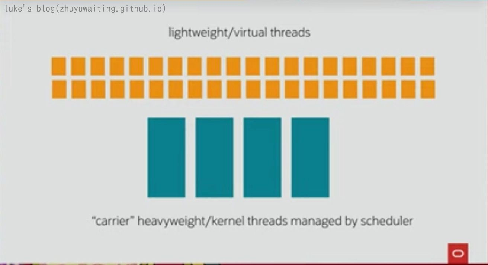

前言：
并发在面试中基本可以说是必问的一个点，而线程又是并发得以实现的一个重要的点，线程无疑非常的重要，那么本章就来看看线程的基础知识。
线程、进程、协程
谈到线程，基本都会谈到进程，那么线程进程有都是些什么呢，都有哪些区别，什么又是协程呢？
进程和线程
进程（Process）是计算机中的程序关于某数据集合上的一次运行活动，是系统进行资源分配和调度的基本单位，是操作系统结构的基础。
线程是CPU调度和分派的基本单位，它可与同属一个进程的其他的线程共享进程所拥有的全部资源。
区别：进程是操作系统资源分配的基本单位，而线程是任务调度和执行的基本单位
线程是比进程更轻量的执行单位，可以把一个进程的资源分配和执行调度分开，各个线程既可以共享进程资源（内存地址、文件I/O等），又可以独立调度。
线程的实现
- 使用内核线程实现 1:1
- 使用用户线程实现 1:n
- 使用用户线程加轻量级进程实现 n:m
内核线程
内核线程（KLT kernel-level thread）是由操作系统内核支持的线程，这种线程由内核来完成线程切换，内核通过操纵调度器来对线程进行调度，并负责将线程的任务映射到各个处理器上。每个内核线程可以视为内核的一个分身，这样操作系统就有能力同时处理多件事情，支持多线程的内核就称为多线程内核.
轻量级进程(LWP):
轻量级进程就是我们通常意义上所讲的线程，由于每个轻量级进程都由一个内核线程支持，因此只有先支持内核线程，才能有轻量级进程。由于内核线程的支持，每个轻量级进程都成为一个独立的调度单元，即使其中某一个轻量级进程在系统调用中被阻塞了，也不会影响整个进程继续工作.首先，由于是基于内核线程实现的，所以各种线程操作，如创建、析构及同步，都需要进行系统调用。而系统调用的代价相对较高，需要在用户态（UserMode）和内核态（Kernel Mode）中来回切换。其次，每个轻量级进程都需要有一个内核线程的支持，因此轻量级进程要消耗一定的内核资源（如内核线程的栈空间），因此一个系统支持轻量级进程的数量是有限的
内核线程实现：
linux 采用的是内核线程的实现方式
用户线程:
广义上来讲，一个线程只要不是内核线程，都可以认为是用户线程（User Thread，UT）的一种，而狭义上的用户线程指的是完全建立在用户空间的线程库上，系统内核不能感知到用户线程的存在及如何实现的。用户线程的建立、同步、销毁和调度完全在用户态中完成，不需要内核的帮助。
用户线程的优势在于不需要系统内核支援，劣势也在于没有系统内核的支援，所有的线程操作都需要由用户程序自己去处理。线程的创建、销毁、切换和调度都是用户必须考虑的问题，而且由于操作系统只把处理器资源分配到进程，那诸如“阻塞如何处理”“多处理器系统中如何将线程映射到其他处理器上”这类问题解决起来将会异常困难，甚至有些是不可能实现的
用户线程的实现方式

混合线程实现方式：
java 线程的实现
JDK1.3开始，主流java虚拟机线程模型都是基于操作系统原生线程模型来实现的，也就是采用的是 1:1的内核线程模型。
例如 HotSpot ，他的每一个java线程都是直接映射到一个操作系统原生线程来实现的， 中间没有额外的间接结构，所以调度全权交由操作系统来决定，所以何时冻结或唤醒线程、该给线程分配多少处理器执行时间、该把线程安排给哪个处理器核心去执行等，都是由操作系统完成的，也都是由操作系统全权决定的。
java 线程的调度
- 协同式线程调度
- 抢占式线程调度
协同式线程调度：线程的执行时间由线程本身来控制，线程把自己的工作执行完了之后，要主动通知系统切换到另外一个线程上去
抢占式线程调度：每个线程将由系统来分配执行时间，线程的切换不由线程本身来决定
Java使用的线程调度方式就是抢占式调度
线程的状态：

java线程的创建
- 继承自Thread
- 实现Runnable
- 使用Callable和Future
1 |
|
协程(纤程) fiber light-thread
为什么需要协程
前面我们说了，java线程是1：1的内核线程的实现方式，调度方式也是抢占式调度。
但是操作系统的线程实现方式是为了通用性，其需要支持所有类型的并发操作。故而其线程的切换需要进行线程上下文的切换操作，对于一些IO密集型操作，其线程上下文的切换开销也是比较大的，因为线程切换需要响应系统中断，进行保存和恢复现场。
也就出现了协程（coroutine）.
java的实现
java对于协程的实现方式是 纤程(Fiber)，或者是 light weight thread。
light weight thread 的实现方式是在底层1:1内核线程的基础上，进行封装了轻量级线程的方式来实现，

黄色的部分表示的就是新的并发方式 light weight thread。 多个light weight thread 可以共用一个内核级线程
light weight thread 由两部分构成
- Continuation 执行过程
- Scheduler 调度器
执行过程负责维护现场，调度器负责编排所有要执行的代码的执行顺序。
其示例如下图:

协程为什么开销小
要解释这个问题，我们首先要解释什么场景适合使用协程：
- 协程将保存、恢复现场，和调度的工作从操作系统手中拿过来，那么对于一些IO密级性场景，就可以通过简单的先进先出的调度，使用完全无锁调度，调度开销变会减少。
- 协程更加的轻量，64位Linux上HotSpot的线程栈容量默认是1MB，而一个协程的栈通常在几百个字节到几KB之间。
总结
java目前都是基于1：1的内核线程实现抢占式调度的线程，该线程的上下文切换，调度等均交由操作系统来进行，而线程阻塞唤醒的调度，很消耗时间。于是便出现了fiber 纤程，在调度以及栈大小上进行优化，目前fibers项目是 project Loom 。 该特性预计会加入的到JVM的原生支持，并且JDK对外的api接口都会进行适配，希望JDK13的时候有望见到。
参考
<深入理解java虚拟机>